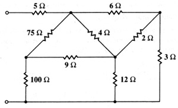

B04 DC analysis: Find input resistance of resistive net
Question. Given the following net, find the input resistance.

Solution:
There are different ways to solve this problem using Symbulator. I'll present here the easiest way, using one of the latest tools of Symbulator: thevenin(). This tool will provide us with the Zth, which is the input impedance of the circuit.
1) Label nodes and elements. Define a variable containing circuit description. I used this description:
"r5,1,2,5.; r6,2,3,6.; r75,4,2,75.; r4,2,5,4.; r2,5,3,2.; r9,4,5,9.; r100,4,0,100.; r12,5,0,12.; r3,3,0,3." àcir
2) Run the Thevenin/Norton tool:
sq\thevenin(cir,1,0)
When asked, select DC (direct current) analysis.
3) Now, find the value you need.
zth
9.8989
Answer: The answer obtained is the right one.